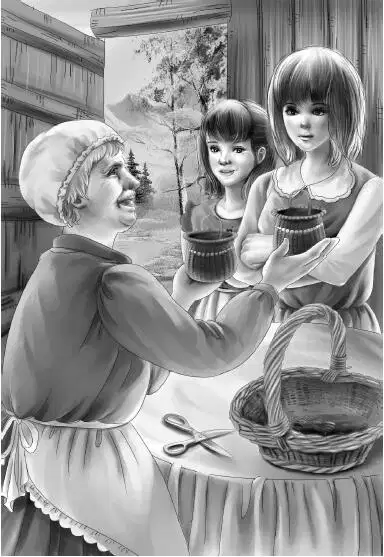

When the family met at supper，David was not there.
“Don’t worry about him，” Mr. Alden said，sitting down at the table.“He’s got two good legs and he can walk miles. He’ll show up when he gets ready.”
Mr. Carter was not there，either. Nobody asked where he was. They were used to his going and coming.
But Dr. Osgood was there. He said，“I shall be working here most of the summer. You know，my head man is a fine young scientist. He is having the time of his life. He knows those fossils even better than I do.”
Benny had been looking thoughtful. Suddenly he said，“Why don’t we go home，Grandfather？”
Everybody stopped eating to stare at Benny. He was usually the last person to want to go home.
“Well，why not？” Benny went on.“I’d like to see Watch again. We’ve been away quite a few days.”
“That’s an idea，” said Grandfather.“Our real work here is ended. I shall keep track of David anyway， and Lovan，too. We can get here anytime in two hours.”
Jessie said，“David will be a different boy，Grandfather. I think his Indian friends didn’t treat him well. He was not from their tribe. If he’s treated right，he’ll act right.”
Just as she spoke，a figure appeared in the door. It was David and he was indeed a changed boy. The whole family stared at him and listened.
“Oh，Mr. Alden！” he cried. （This didn’t sound like David at all！） “My aunt and I are going to be fine together. She needs me，and I sure need a family.” He put out both his hands to shake hands.“Aunt Lovan talks now，a steady stream！”
“So do you，Dave，” said Benny，laughing.“What are you going to do first？”
“Well，I’m going to get my dog.”
“What kind of a dog is he？” asked Jessie.
“Oh，he’s a hound dog. He came to me. He didn’t have any home either. He’s white with black and sort of yellow. He has long soft ears. His tail wags so fast you can’t see it.”
Everyone was thinking the same thing，“David loves his dog.”
“What’s his name？” asked Violet.
David stopped short. Then he said，“I hate to tell you. I always called him Mine. He was the only thing I had.”
“That’s OK，” said Benny.“When you call him，you can say Miney，Miney，Miney！”
“I never have to call him，” said David，shaking his head.“He’s always with me.”
Grandfather said，“Sit down，my boy，and eat your supper. Don’t you want a ride to Maine？”
“No. I’ll go the same way I came. It won’t take me long.”
“We are going home，too，Dave，” said Henry.“We want to get that silver cleaned and sold. And Grandfather wants to buy your aunt’s woodland on both sides of Flat Top. When he owns it，Lovan can be sure the trees will not be cut. Mr. Carter knows collectors who buy old silver.”
“And that necklace，” said Jessie.“Lovan doesn’t need to worry about money again.”
“She’s going to pay me by the week，” said David. “I’ll have to buy some heavy clothes if I work outdoors and some clothes for school，too.”
“David！” said Grandfather.“I won’t worry about you another minute. You are a man for sure. And that’s what your Aunt Lovan needs—a strong young man. I know you must be disappointed that this treasure isn’t yours，but—”
“Never mind that，Mr. Alden！” said David，putting out his hand.“I don’t want to hear it. Just wait till I get my dog. Then we’ll be all set.”
“We’ll go to see your aunt later and say goodbye，” said Grandfather，“and now we will say goodbye to you for awhile.”
David pushed back his chair. His supper was finished. He looked at them all，one by one. He said， “But I don’t know—I don’t know—” Violet had tears in her eyes.
“Don’t say anything，Dave，” she said.“Just don’t say anything.”
Benny said，“I can’t say goodbye to Dave，either.”
“I know what you mean，” Jessie said.“Dave is a good friend and it seems as if we have known him for a long time.”
The next day was spent getting ready to leave. Mr. Alden wanted to talk with Dr. Osgood. He also wanted to see the rangers about Lovan Dixon and David.
Late in the afternoon the family drove over to see Lovan. They found her sitting on her dinosaur step， finishing a basket.
Somehow Lovan seemed different to them. There was a new happiness in her face.
“I have been looking for you，” she said.
“You have？” asked Benny.
“Yes，the ranger told me，” said Lovan.“He came over with my canned stuff. I have to get powdered milk for David. When you see him again you won’t know him. I’m a good cook.”
“He looks better already，” said Grandfather. “David stands straight now and looks you right in the eye.”

While Mr. Alden was telling Lovan about her woodlands and the treasure，the girls watched her fingers with the basket. They saw that she had put white beads all around the top of the basket. Now she was winding a border of sweet grass for the edge. She came to the last stitch and fastened the grass very tightly. She held it up a minute and then started to get up.
“Come in，” she said.
She walked across the room and took another basket from the table. It was just like the other basket，but the beads were light purple. She turned around and gave the white one to Jessie and the purple one to Violet.
“A sewing basket for you，” she said，“made with love.”
The girls were so pleased that they could hardly speak.
“We need these so much！” said Jessie. She smelled the sweet grass.
“We’ll always think of you when we use these，” said Violet.“It is the nicest present you could have given us.”
“Thank you，Lovan，” said Grandfather.“Those are very thoughtful presents，and they are all your handiwork.”
“Do sit down，” said Lovan. She knew the young people would sit on the floor at her side.
“One more thing，” said Grandfather，“if you are going to feed David and pay him by the week，you’ll need money before I can buy this land. Now this is my business. I want David to be educated. And here is some money to start on. A ranger will come to bring you money. You make out a check and he will cash it. You’ll be surprised how much a boy can eat.”
“And a dog，too，” said Lovan，smiling. She took the money.“I will take care of David like a son. I can teach him many things myself. And there is a school not too far away.”
“Well，” said Mr. Alden，getting up，“we must go. We’ll just say goodbye for now.”
“No，no！” cried Lovan.“Don’t say goodbye. Say， ‘Come again. ’”
“That’s the way to talk，” said Benny.“We’ll say come again soon，so why say goodbye？”